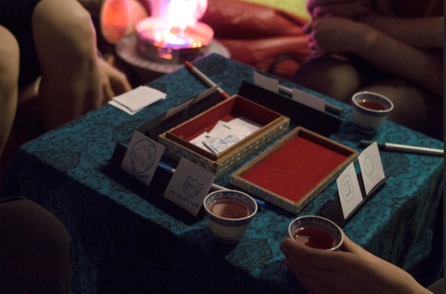
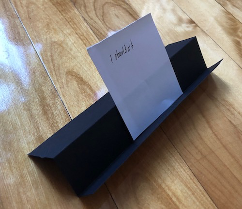

Escaping from here:
Designing an Escape Room I'd actually want to play
When I was young I had a fantasy about getting locked in the library overnight. Maybe I didn’t hear the librarian calling? Maybe my parents were thinking about something else while they took my sisters home?
Suddenly I am alone in the perfect quiet, surrounded by the infinite possibility of thousands of books. The lock in this fantasy isn't locking me in, it's locking the world out.

I still feel a little tug when I look at certain kinds of bookshelves. But there's no librarian pushing me out. The fantasy is dead because the locks are on the inside.
What is an Escape Room?
An Escape Room is a game where players try to solve puzzles together in a room under time pressure. People are not actually trapped. They are kept in the room by social pressure, pride, or pleasure.
My first Escape Room
I did my first Escape Room in San Francisco. The people I was playing with were exceptionally clever, kind, and delighted.
I was not delighted. My mind was stubborn: unless these puzzles proved themselves relevant, my brain would not exert itself for them. And from deep inside me, a vehement refusal of the artificial urgency.

Eventually I settled on wandering around the tiny space, helping with physical tasks, unsuccessfully trying to accept my difference and hoping no one would notice.
But I kept thinking about the experience. Why did it feel so flat? Am I not trapped? Do I not desire escape?
Designing an Escape Room
So I decided to make my own Escape Room.
My Escape Room would be a collaborative space where people illuminate barriers in their lives and work through them together. It would take place inside a blanket fort with cushions and tea.
I had just emerged from a burnout, I needed to be gentle. This would be a project without computers or code, and without commitment. I would make it at Gamerella, a thoughtfully designed Game Jam.
By thoughtful, I mean that Gamerella pays a professional to assist with emotional and interpersonal health. They check in on the teams, not to make sure that work is being produced, but to keep an eye on people and power dynamics. Please let this become a standard at Game Jams instead of candy mountains or giant piles of plastic swag.
Confinement
Can there be escape without confinement? We humans don't like to be actually trapped. But we do like to fantasize about being trapped.
Sometimes the only way I can sleep is by imagining that I am trapped, powerless to do anything but float, free from the constant internal pressure to be iterating, improving, and producing.

Pleasurable confinement doesn't really work for an Escape Room, people will just writhe on the floor sighing with joy. The idea core to my Escape Room is escape, not confinement.
The problem with Escape Rooms
So what is the problem with Escape Rooms? There are three core problems for me: arbitrary goals, intense pressure, and alienation.
Arbitrary Goals - What if the puzzles were less arbitrary? What if the solutions had personal relevance? Maybe an Escape Room inspired by someone leaning in too close at a party and I am rooted, frozen, trapped. Or a nightmare where I die and then wake up the next morning in the same bed, and suddenly realize that there is no escape, that death is the out-door and also the in-door?
Intense Pressure - What if the Escape Room had no external pressure? No time limit? I know that some people need a clock ticking down to feel stimulated, but I am continuously and constantly reminded of the dwindling moments of my life. I don’t need a timer.
Alienation - There is no guarantee against alienation. But what if I felt empowered to construct the experience? What if the puzzles emerged from my problems in this exact moment? What if it responded to me, to you, to us in our actual needs to escape? What if it felt less like a cookie-cutter experience, rigid and meticulously designed, and more like a nebulous cloud, designed with certain properties that activate and take shape around us?
My Escape Room
With these problems in mind, I designed my Escape Room.
The core ideas would be community, barriers, and escape. We would set meaningful, self-directed goals inside a responsive system that participants would actively create. There would be no arbitrary time pressure, beyond the organic timekeeping in any small gathering.
I kept two traditional components of Escape Rooms: the physical space of gathering, and working with others to solve challenges.
Materials
- A soft and contained environment (a blanket fort!)
- Pens and paper for players to draw their characters and challenges
- A stack of tactics cards on the table, face down
- A small box
Other details include hot tea in tiny rounded cups, colourful markers, thick paper which feels precious, making cardholders out of stiff paper, covering a low table with a colourful scarf, using cushions, and playing soft ambient music.

First draft of tactics cards
Introduction to the Escape Room
I welcome all three players. We discuss the purpose of this Escape Room: we are each trapped in some ways, together we might find ways to escape.
This experience only comes to life in the space between us. We will each choose how deeply we play, how this experience continues, and when it is complete. Breaks, new rules, and mid-game abandonments will be unconditionally supported.
Character design
We name and draw our character on the paper. We place our characters in the box.

Define barriers
With our characters in the box, we need to find the contours of the room that is containing them. We draw or write some of the barriers that are trapping our characters. We draw from our own lives. Does something keep us trapped? Something blocking us from the life we want to live?
We represent these barriers with small drawings or words, in any way that feels right to us. 
Play
The first player selects the top card from the pile of tactics cards. They match it to any of their barrier cards and lay both cards on the table.
Then the first player works through their barrier using the tactics card. The player can ask for help at any time. Other players can only help by listening unless they are directly asked for help.
The player decides when their barrier is complete. Then the barrier is put to the side. And the next player begins their turn.
When all the barrier cards are complete, our characters will escape their box.
Modifications
The Escape Room is absolutely changeable to suit the needs of the people playing. Here are some examples:
- If the tactic card doesn’t work for the player, they can draw another.
- Players are welcome to introduce new tactic cards, but they should draw/write it out.
- Players make a small mark on each other's barriers, at the end of each turn.
Escape
At the end of completing the barriers, we actively imagine our liberation from these barriers together.
We lift our characters out of the box and set them free.
Information & Consent
After the escape is complete, we talk about what it means to leave the space with intimate and personal information.
Some of us leave our barriers behind for documentation and inspiring others.

Summary & Final Thoughts
This Escape Room keeps the concepts of a shared space and collaberative problem-solving, but discards time pressure and one-size-fits-all puzzles. The puzzles in this Escape Room are defined by the players. You could think of this as a blanket-fort Escape Room. You can think about it as diy friend therapy in a time and place where everyone needs help with our mental health and few people have access.
Is this a good Escape Room? Probably not. But it was a meaningful and challenging and pleasurable experience for me. It is an experiment with what an Escape Room might be.
People like to talk about standing on the shoulders of giants. Sometimes it's in reference to our interconnectedness, the depth of our reliance on others, a push against the absurdity of people believing they are "self-made."
But sometimes people talk about giants with way too much piety. Just because 10 important people are standing on each other's shoulders doesn't mean they are facing in a useful direction, or even standing in an optimal place.
There are 10 000~ Escape Rooms in the world. They are made with brilliance, inventiveness, and talent. But I haven't found any that have puzzles and goals that are responsive and individually meaningful. And I certainly have never seen any that address the relationship between people who pay for an "confinement/escape" entertainment experience and people who are actually trapped or locked up and in the deepest need of escape.